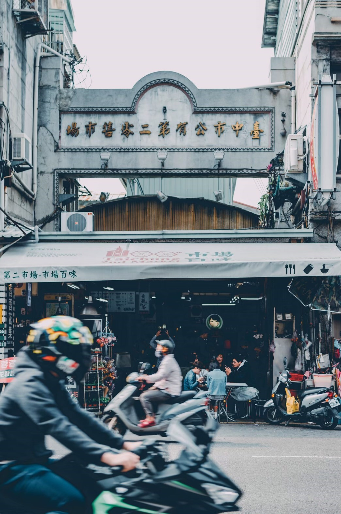
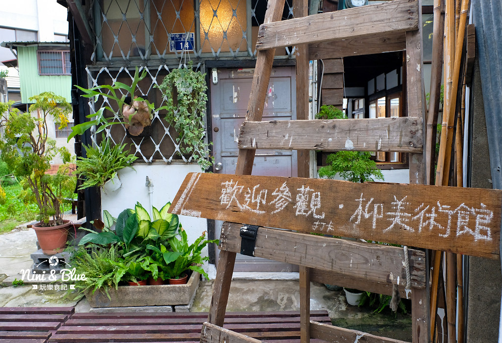
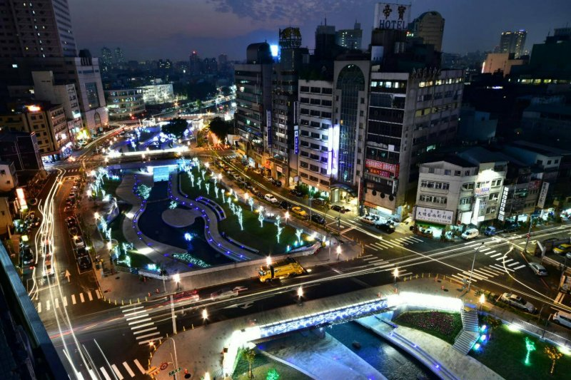
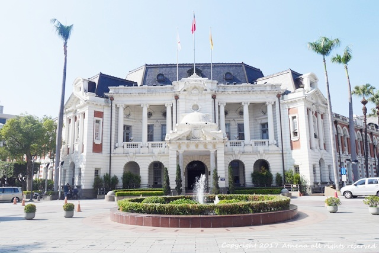

第二市場
地址： 400台中市中區三民路二段87號
1917年，臺中州廳政府於新富町(今中區三民路、台灣大道、中山路及興中街所圍成街廓)建立「新富町市場」，是臺中市現存歷史最悠久的傳統市場，市場內各通道以六角形放射狀排列，在中心會合，名為「六條通」，以精美的貨品品質、較高的售價服務於當時新富町的日本人，因此又有「日本人的市場」之稱。 第二市場另一項特色是水果市場的買賣，日據時期以香蕉為主要賣點，形成香蕉市仔，戰後則以販賣日本進口的蘋果、梨子為主，民國86隨著水果批發市場遷移至中清路後，往日風光不再，但仍然留下水果批發場地的木構造棚架，令人回味當時的水果市集盛況。臺灣光復後，第二市場仍持續發展且擴張中，並規劃311處攤(鋪)位(固定攤150攤、店鋪54間、臨時攤107攤)。
柳美術館(柳屋)
地址： 420台中市豐原區三民路218號
柳屋隱身在中山路257巷的柳川古道間，穿越曲折的巷弄與狹窄的通道，彷彿武陵人意外闖進桃花源。 柳屋原本是建築系學生楊廸的畢業設計；她花了兩年時間和一群朋友們一起整修了這棟老房子，保留了房屋大部分的結構，也試著讓另一些屬於當代的物質、符號與意象並置在這個空間裡。因此在柳屋能看到一道道時間的軸線，從清朝到日治、以至此刻的當下。 柳屋樸素而開放的空間，讓策展者能不受限地發揮創意。在他們的構想與發展過程裡，幾度轉換柳屋的使用目的和規劃，最後定調為一個美術館；理由在於中區少有藝術性空間。再則楊廸希望這裡可以是一個相對平實的展場，讓美術系與設計科系的學生不用花那麼多錢去找昂貴的空間策展。於是柳屋開始陸續有了各式的展覽。 關於未來也是她現在正在進行的是：希望這裡有更多不同有趣的事持續發生，包括平面的展覽或立體的展演，並促成各種不同身份與族群之間的對話。透過這些事作為一個吸引大家來到中區的理由，同時也讓中區的居民發現，他們熟悉的生活場域裡開始有一些不同於以往的事正在萌芽。
柳川
柳川是台中市中心四條重要河川之一，整治之後成為市區首座永續性生態工法開發的景觀河岸，白天的柳川呈現悠閒的氣息，水質清澈，可近距離欣賞水中的錦鯉，十分適合親子出遊踏青；而晚上的柳川充滿浪漫的氛圍，走在璀璨的燈火下，看著閃閃亮光的柳樹和裝置藝術天鵝，不僅是拍夜景的好地方，也適合情侶夜晚來此散步，也成為台中新興的熱門景點。除了是IG打卡拍照的好地方，也是一條會呼吸的河川，拓寬兩側護岸改為緩坡，有助排水及透水，並藉由滲透及蒸發，減輕暴雨逕流對排水系統的負荷，河岸下方設置水撲滿吸收水份，儲水回抽作為澆灌使用，河道下方則設置滲透性排水管（HDPE管），在枯水期與豐水期之間調整水源，創造出如同海綿般吸水的彈性空間，具有美感與儲水灌溉的功能。
而為兼顧水質及生態，柳川水源經過上游汙水截流送至中華水質淨化場處理後，現在已有顯著改善，由原先嚴重汙染降為輕度汙染；河岸旁除移植37株喬木，同時也新植38株水柳保留柳川風情，加上流蘇、台灣欒樹及光臘樹等台灣在地原生植栽共159株喬木，讓柳川河道一年四季皆有不同的景色。

台中州廳
地址： 403台中市西區民權路99號
臺中州廳建於日治時期的官署建築，完工後先後成為日治之臺中州、後之臺中市的政府所在地。目前被列為臺中市市定古蹟保護。由於該建築最初是日治時期的臺中州廳（「州廳」等同於中文語法的「州政府」）使用，因而沿用成為對其之稱呼。台中州廳附屬建築群自日治時期起就被規劃作為總督府的廳舍，至今仍為台中市政府的辦公處所；州廳鄰近台中火車站，交通具便利性，其附近有商業區、飲食消費區和傳統的老街，充滿著歷史文化資源，州廳及附近建築群被列為歷史建築，此區域可說是歷史古蹟最為密集之地區，也因此，吸引許多外來遊客到此處參觀。 臺中州廳1912年動工，1913年完成第一期，經歷四次擴建，於1934年完成現行規模，由日人森山松之助設計。臺中州廳管轄臺中市市、彰化縣及南投縣地，臺中市役所才是當時臺中市政府。二戰後，臺中市政府遷入現址辦公至今，而臺中州廳則被臺中市列為市定古蹟。 臺中州廳整體設計為仿法國馬薩風格，正立面具有明顯的「馬薩」式屋頂。主體為L型平面二層樓建築，建築正面向東，中央有塔式突出建築，正立面左右各段「角樓」用以完整銜接兩翼建築物。一樓入口玄關有多立克式柱子，二樓則採愛奧尼克柱式，退縮的陽臺強化立面的陰影效果。臺中州廳建築為突顯其政治上的位階與都市中的重要性，並配合臺中市街計畫，將主入口設於重要街廊的轉角處，為日治時期官署建築的特徵。